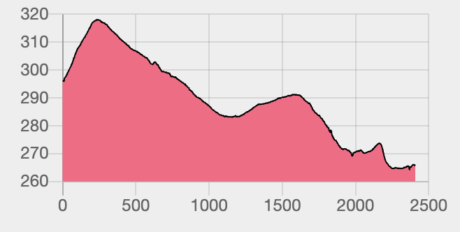
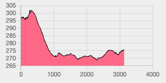
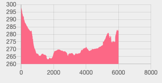
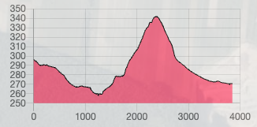

Analiza 5G — Radlin k. Kielc
Stacje bazowe, profile terenu i dobór routera outdoor
Lokalizacja: 50.8483°N, 20.7456°E, ~296 m n.p.m.
Data opracowania: marzec 2026
Źródła: btssearch.pl, UKE, TP-Link, spectrum-tracker.com, dane NMT
Play (n78!) · Orange · T-Mobile · Plus — 6 stacji
Stacje bazowe
| ID |
Operator |
5G n78 |
5G n28 |
5G inne |
LTE |
| KIE4427 |
Play |
TAK |
TAK |
n1 |
B1/B3/B7/B8/B20/B28 |
| KIE1043 |
Play |
BRAK |
BRAK |
n1 |
B1/B3/B7/B20 |
| 13788 |
Orange |
BRAK |
TAK |
n1 |
B1/B3/B7/B20/B28 |
| 55187 |
T-Mobile |
BRAK |
TAK |
n1 |
B1/B3/B7/B8/B20/B28 |
| BT12468 |
Plus |
BRAK |
BRAK |
n3/n7/n8 DSS |
B3/B7/B8 |
| BT14889 |
Plus |
BRAK |
BRAK |
n3/n7/n8 DSS |
B3/B7/B8 |
Profil terenu i linia wzroku

Radlin (296m) Wzgórze (317m) BTS Cedzyna (264m + maszt ≈ 299m)
× /\
\ ⛔ BLOKADA / \
\ ↑ ~10-18m / \
\________________/\_ \___
\_________
× BTS
0m 250m 500m 2500m
| Parametr | Wartość |
|---|
| Odległość | 2,5 km (Orange/T-Mo) — 2,8 km (Play n78) |
| Azymut | 322° NW (Orange) · 331° NNW (Play n78) · 343° NNW (T-Mobile) |
| Twoja wysokość | ~296 m n.p.m. |
| Wysokość BTS | ~264 m + maszt ~35 m = ~299 m |
| Przeszkoda | Wzgórze ~317 m n.p.m. w odl. ~250 m (+21 m nad użytkownikiem) |
| Linia wzroku |
⛔ ZABLOKOWANA — wzgórze blokuje o ~10–18 m nawet z masztem BTS |
| Prędkość realna (Play n78) | 0–100 Mbps — n78 prawdopodobnie niedostępne, fallback na LTE |
| Prędkość realna (Orange/T-Mo) | 30–120 Mbps — low-band przeniknie częściowo |
⛔ Cedzyna: LOS zablokowany.
Jedyna stacja n78 w okolicy, ale wzgórze 317 m uniemożliwia wykorzystanie pasma 3600 MHz.
Strata dyfrakcyjna ~15–25 dB + las (Góry Świętokrzyskie) ~10–20 dB na 3,5 GHz.
Play — 1 stacja (n28 + pełny LTE) · NAJBLIŻSZA STACJA
Stacja bazowa
| ID |
Operator |
5G n78 |
5G n28 |
5G inne |
LTE |
| KIE4428 |
Play |
BRAK |
TAK |
n1 |
B1/B3/B7/B8/B20/B28 |
Profil terenu i linia wzroku

Radlin (296m) Wzniesienie (~302m) BTS Radlin (275m + maszt ≈ 310m)
× /‾\
\ +4-6m / \____
\_OK z dachu_/ \___ ___
\___ / \
\_____________/ × BTS
0m 400m 1000m 2000m 3300m
| Parametr | Wartość |
|---|
| Odległość | 1,7 km — najbliższa stacja |
| Azymut | 25° (NNE) |
| Twoja wysokość | ~296 m n.p.m. |
| Wysokość BTS | ~275 m + maszt ~35 m = ~310 m |
| Przeszkoda | Łagodne wzniesienie ~302 m w odl. ~400 m (+4–6 m nad użytkownikiem) |
| Linia wzroku |
✅ CZYSTY z dachu/komina — montaż +3–6 m oczyszcza wzniesienie, dalej brak przeszkód |
| Prędkość realna | 150–300 Mbps — n28 + LTE agregacja, stabilny LOS, krótki dystans |
✅ Radlin: najbliższa stacja (1,7 km), najlepszy profil terenu — REKOMENDOWANY KIERUNEK.
Czysty LOS z montażu na dachu. Brak n78, ale stabilne 150–300 Mbps na n28 + LTE
to lepiej niż niestabilne 0–100 Mbps z n78 za wzgórzem w Cedzynie.
Orange (n28 + pełny LTE) · T-Mobile · Plus (DSS) — 3 stacje
Stacje bazowe
| ID |
Operator |
5G n78 |
5G n28 |
5G inne |
LTE |
| 14004 |
Orange |
BRAK |
TAK |
n1 |
B1/B3/B7/B8/B20/B28 |
| 52845 |
T-Mobile |
BRAK |
TAK |
n1 |
B1/B3/B7/B8/B20/B28 |
| BT12337 |
Plus |
BRAK |
BRAK |
n3/n7/n8 DSS |
B3/B8 |
Profil terenu i linia wzroku

Radlin (296m) BTS Górno (285m + maszt ≈ 320m)
×
\
\___ ___
\___ ___ / × BTS
\______/ \____________________________/
~265m ~285m
0m 1000m 2000m 4000m 6500m
| Parametr | Wartość |
|---|
| Odległość | 5,1 km (Orange/T-Mobile) · 6,0 km (Plus) · 6,8 km (Play KIE4415) |
| Azymut | 85° E (Orange/T-Mobile) · 84° E (Plus) · 88° E (Play) |
| Twoja wysokość | ~296 m n.p.m. |
| Wysokość BTS | ~285 m + maszt ~35 m = ~320 m |
| Przeszkoda | Brak — teren opada, użytkownik powyżej całej trasy |
| Linia wzroku |
✅ CZYSTY — strefa Fresnela wolna, brak przeszkód |
| Prędkość realna (Orange) | 100–200 Mbps — B3 30 MHz (najszerszy LTE), dystans 5,1 km |
| Prędkość realna (T-Mobile) | 80–180 Mbps — pełny LTE, B20 15 MHz |
| Prędkość realna (Plus) | 30–80 Mbps — DSS, mało pasm LTE (B3/B8) |
Górno: czysty LOS, dystans 5,1 km.
Orange z B3 30 MHz da solidne 100–200 Mbps. T-Mobile podobnie. Plus słaby (brak n28, mało LTE).
Dobra opcja zapasowa lub dla Orange/T-Mobile jako operatora głównego.
Play (n28 + pełny LTE) — 1 stacja
Stacja bazowa
| ID |
Operator |
5G n78 |
5G n28 |
5G inne |
LTE |
| KIE3328 |
Play |
BRAK |
TAK |
n1 |
B1/B3/B7/B8/B20/B28 |
Profil terenu i linia wzroku

Radlin (296m) GÓRA (~340m)
× /\
\ / \
\___ / \
\____ / \
\____________________/ \___
\___ × BTS 265m
0m 1000m 2200m 3500m
| Parametr | Wartość |
|---|
| Odległość | 3,9 km |
| Azymut | 134° (SE) |
| Twoja wysokość | ~296 m n.p.m. |
| Wysokość BTS | ~265 m + maszt ~35 m = ~300 m |
| Przeszkoda | Góra ~340 m n.p.m. w odl. ~2 200 m (+44 m nad użytkownikiem!) |
| Linia wzroku |
⛔⛔ TOTALNIE ZABLOKOWANY — najgorsza przeszkoda, blokada ~40 m nad BTS |
| Prędkość realna | 10–40 Mbps — nawet 700 MHz nie przebije skutecznie |
⛔⛔ Brzechów: masywna góra 340 m — kierunek nieużyteczny.
Strata dyfrakcyjna 25–35 dB. Najgorszy profil terenu ze wszystkich kierunków.
5. Ranking kierunków i operatorów
| # |
Kierunek |
Operator |
Odl. |
LOS |
Prędkość DL |
Komentarz |
| 🥇 |
Radlin (25° NNE) |
Play |
1,7 km |
✅ |
150–300 Mbps |
Najbliższa stacja! Czysty LOS z dachu. n28 + pełny LTE. |
| 🥈 |
Górno (85° E) |
Orange |
5,1 km |
✅ |
100–200 Mbps |
Czysty LOS. B3 30 MHz najszerszy blok LTE. |
| 🥉 |
Górno (85° E) |
Plus |
6,0 km |
✅ |
30–80 Mbps |
Czysty LOS, ale brak n28 i mało pasm LTE. |
| 4. |
Cedzyna (331° NNW) |
Play (n78) |
2,8 km |
⛔ |
0–100 Mbps |
Jedyny n78, ale wzgórze 317 m blokuje. Ryzykowne. |
| 5. |
Cedzyna (322° NW) |
Orange/T-Mo |
2,5 km |
⛔ |
30–120 Mbps |
Za wzgórzem. Low-band przeniknie częściowo. |
| 6. |
Brzechów (134° SE) |
Play |
3,9 km |
⛔⛔ |
10–40 Mbps |
Góra 340 m — totalny blok. Nieużyteczny. |
Porównanie wizualne
| Kierunek |
Prędkość DL |
Skala |
| Play → Radlin (25°) ✅ |
150–300 Mbps |
████████████████████████████████████████ |
| Orange → Górno (85°) ✅ |
100–200 Mbps |
█████████████████████████████ |
| Plus → Górno (85°) ✅ |
30–80 Mbps |
█████████████ |
| Play → Cedzyna (331°) ⛔ |
0–100 Mbps |
████████████████ |
| Orange/T-Mo → Cedzyna (322°) ⛔ |
30–120 Mbps |
███████████████████ |
| Play → Brzechów (134°) ⛔⛔ |
10–40 Mbps |
██████ |
Kluczowy wniosek: teren zmienia wszystko.
Czysty LOS na niższych pasmach > wyższe pasmo za przeszkodą.
Cell lock nie jest potrzebny — jedyna stacja n78 jest za wzgórzem,
a stacje z czystym LOS nie mają n78.
6. Porównanie routerów 5G
6.1 Modem i wydajność
| Parametr |
ER701-5G-Outdoor (Omada) |
NE200-Outdoor (konsumencki) |
| Prędkość 5G DL | 7,01 Gbps (SA) / 4,5 Gbps (NSA) | 4,67 Gbps |
| Prędkość 5G UL | 1,25 Gbps (SA) / 730 Mbps (NSA) | 1,46 Gbps |
| Prędkość LTE | DL 1,6 Gbps / UL 211 Mbps | DL 1,6 Gbps / UL 211 Mbps |
| Tryb SA | TAK | Niepotwierdzony |
| Chipset | MediaTek T830 (Fibocom FG370) | Nieujawniony |
| RAM / Flash | 2 GB LPDDR4x / 4 GB eMMC | Nieujawniony |
6.2 Łączność i interfejsy
| Parametr | ER701-5G-Outdoor | NE200-Outdoor |
|---|
| SIM | Dual Nano SIM (failover) | Single Nano SIM |
| Ethernet | 1× 2,5G RJ45 | 1× 2,5G RJ45 |
| Wi-Fi | 2,4 GHz 802.11n (zarządzanie) | Brak |
| Anteny | 9× wewnętrzne + 1× Wi-Fi | Wewnętrzne (liczba nieujawniona) |
| Zasilanie | 802.3at PoE / Passive PoE 48V | 802.3af/at PoE / Passive PoE 48V |
| Kabel w zestawie | Brak | 10 m RJ45 |
6.3 Oprogramowanie
| Funkcja | ER701 | NE200 |
|---|
| Zarządzanie chmurowe | Omada Central | Brak |
| DPI / VLAN / QoS / OSPF | TAK | Brak |
| Sesje równoczesne | 500 000 | Nieujawnione |
| Uwierzytelnianie (RADIUS/LDAP) | TAK | Brak |
| SMS / SNMP | TAK | Brak |
| Serwer VPN | Brak | PPTP/IPSec/OpenVPN |
| IP Passthrough | Brak | TAK |
| Cell lock | Brak | Brak |
6.4 Budowa
| Parametr | ER701 | NE200 |
|---|
| Wymiary | 183 × 110 × 36 mm | 183 × 110 × 36 mm |
| Klasa ochrony | IP66 | IP66 |
| Ochrona przeciwprzepięciowa | 6 kV | 6 kV + 15 kV ESD |
| Temp. pracy | -30°C do 60°C | -30°C do 50°C |
| Montaż | Ściana / słup / okno | Ściana / słup / okno |
7. Kompatybilność z pasmami w Polsce
7.1 Pasma 5G NR — Polska vs urządzenia
| Pasmo (Polska) |
Rola |
ER701 |
NE200 |
| N78 (3500 MHz) | Główne 5G | TAK | TAK |
| N28 (700 MHz) | Zasięg 5G | TAK | TAK |
| N1 (2100 MHz) | 5G/LTE | TAK | TAK |
| N3 (1800 MHz) | LTE/DSS | TAK | TAK |
| N7 (2600 MHz FDD) | Pojemność | TAK | TAK |
| N38 (2600 MHz TDD) | Plus | TAK | TAK |
| N20 (800 MHz) | Zasięg | TAK | TAK |
| N8 (900 MHz) | Legacy | TAK | TAK |
| Pokrycie polskich pasm | 100% | 100% |
Oba urządzenia obsługują 100% polskich pasm.
Dodatkowe pasma ER701 (N26, N75, N76) nie są używane w Polsce.
8. Rekomendacja końcowa
8.1 Ranking urządzeń dla lokalizacji Radlin
| # |
Urządzenie |
Cena ~PLN |
Uzasadnienie |
| 1. |
TP-Link NE200-Outdoor |
1000–1400 |
Najlepszy stosunek cena/wydajność. Outdoor PoE, IP passthrough,
cell lock niepotrzebny. Karta Play, kierunek Radlin. |
| 2. |
TP-Link ER701-5G-Outdoor |
1500–2000 |
Dual SIM (Play + Orange). Zarządzanie Omada.
Nadmiarowe funkcje dla zastosowania domowego. |
| 3. |
Teltonika RUTC50 + antena |
3500–5000 |
Overkill. Cell lock niepotrzebny, straty kablowe obniżają wydajność
vs outdoor CPE. 2–3× droższa opcja. |
8.2 Zalecana konfiguracja
TP-Link NE200-Outdoor + Play 5G → azymut 25° (Radlin, 1,7 km)
| Router |
TP-Link NE200-Outdoor (~1000–1400 PLN) |
| Operator |
Play — stacja KIE4428 w Radlinie (1,7 km): n28 (700) + n1 (2100) + pełny LTE. |
| Montaż |
Dach lub komin (jak najwyżej — oczyścić wzniesienie +4–6 m),
skierowany na azymut 25° (NNE) w stronę Radlina. |
| Podłączenie |
Kabel Ethernet (10 m w zestawie) → router domowy. Tryb IP passthrough. |
| Oczekiwana prędkość |
150–300 Mbps DL (n28 + LTE agregacja, czysty LOS, 1,7 km). |
| Koszt całkowity |
~1000–1400 PLN + abonament Play 5G |
Wskazówka: warto przetestować oba kierunki.
Po montażu porównaj sygnał w kierunku Radlina i Cedzyny. Jeśli n78 z Cedzyny
okaże się działać dzięki dyfrakcji — będzie bonus. Bazowo celuj w Radlin.